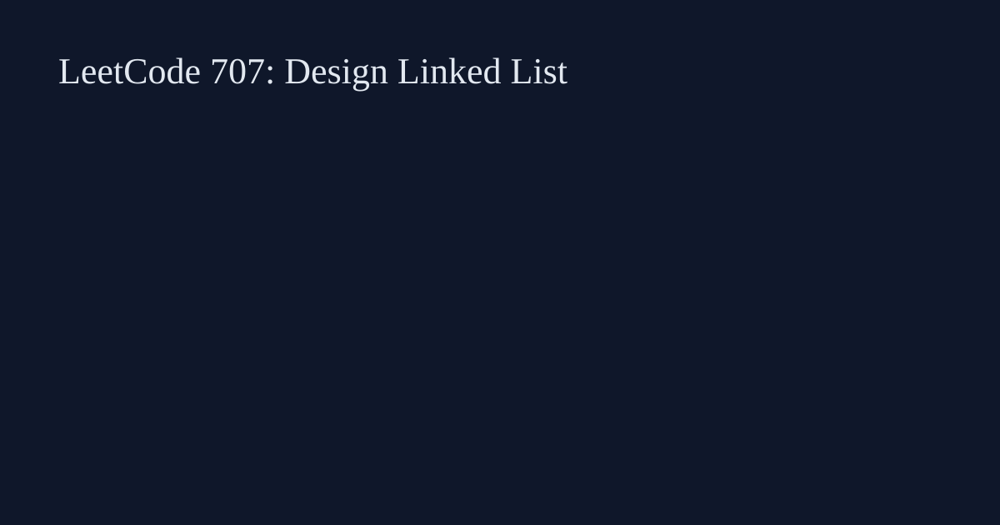

LeetCode 707: Design Linked List (Sentinel Doubly Linked List)
Source: https://leetcode.com/problems/design-linked-list/

English
Use head/tail sentinels with a doubly linked list so insert/delete near any index only rewires neighbors.
class MyLinkedList { static class N { int v; N p,n; N(int v){this.v=v;} } N h=new N(0), t=new N(0); int sz=0; public MyLinkedList(){h.n=t;t.p=h;} N at(int i){ if(i<0||i>=sz) return null; N c; if(i+1i;k--) c=c.p; } return c; } public int get(int i){ N c=at(i); return c==null?-1:c.v; } void ins(N a,N b,N x){ a.n=x; x.p=a; x.n=b; b.p=x; sz++; } public void addAtHead(int v){ ins(h,h.n,new N(v)); } public void addAtTail(int v){ ins(t.p,t,new N(v)); } public void addAtIndex(int i,int v){ if(i<0)i=0; if(i>sz)return; if(i==sz){addAtTail(v);return;} N c=at(i); ins(c.p,c,new N(v)); } public void deleteAtIndex(int i){ N c=at(i); if(c==null)return; c.p.n=c.n; c.n.p=c.p; sz--; } } type N struct{v int; p,n *N}; type MyLinkedList struct{h,t *N; sz int}; func Constructor() MyLinkedList {h,t:=&N{},&N{}; h.n=t; t.p=h; return MyLinkedList{h:h,t:t}}; func (l *MyLinkedList) Get(i int) int { return -1 }class MyLinkedList { public: MyLinkedList() {} int get(int index) { return -1; } void addAtHead(int val) {} void addAtTail(int val) {} void addAtIndex(int index, int val) {} void deleteAtIndex(int index) {} };class MyLinkedList:
def __init__(self):
pass
def get(self, index: int) -> int:
return -1var MyLinkedList = function() {};
MyLinkedList.prototype.get = function(index) { return -1; };中文
使用双向链表并加头尾哨兵，插入删除都可统一处理，避免边界分支爆炸。
class MyLinkedList { static class N { int v; N p,n; N(int v){this.v=v;} } N h=new N(0), t=new N(0); int sz=0; public MyLinkedList(){h.n=t;t.p=h;} }type MyLinkedList struct{}class MyLinkedList {};class MyLinkedList: passvar MyLinkedList = function() {};